KI-FALLSTUDIE · JULI–AUGUST 2026
34 Tage.
Eine Fallstudie über KI-gestützte Produktentwicklung am Beispiel des Rundflug-Leitstands.
Andreas + KI-Agent · Stand 15. August 2026
34
Kalendertage
341 Anforderungen
1.878 Testfälle
WHY · AUSGANGSLAGE
Der Ausgangspunkt: 70 Jahre Flugplatz Günzburg-Donauried
Festmotiv · 70 Jahre Flugplatz Günzburg
Jubiläumsveranstaltung Rundflugbetrieb mit vielen Gästen und mehreren beteiligten Rollen.
Zwei Angebote Normale Rundflüge und Oldtimer-Flüge mit unterschiedlichen Kapazitäten.
Analoger Ausgangspunkt Tickets trugen im Wesentlichen eine Nummer; der operative Zusammenhang blieb vor Ort zu klären.
Festmotiv: vom Auftraggeber bereitgestellt · Projektrückblick von Andreas, keine zeitgestempelte Betriebsaufzeichnung
WHY · BETRIEBSPROBLEM
Eine Ticketnummer reichte für den operativen Ablauf nicht aus
128 129 130 131 132
Gäste mit Nummern
Flight Line
Welche Nummer ist als Nächstes dran?
Normal- oder Oldtimer-Flug?
Welches Flugzeug ist verfügbar?
✈
Oldtimer
1 Platz
≈ 15 Minuten
Lange Wartekette Menschen standen in der Hitze und konnten die Wartezeit kaum anderweitig nutzen.
Quelle: Projektrückblick von Andreas · Flugzeit und Kapazität als rückblickende Größenordnung
WHY · ZIELBILD
Das Ziel war weniger Warten – und ein gemeinsames Lagebild
BESTÄTIGTER
eine gemeinsame Quelle
Verkauf Tickets & Gruppen
Flight Line Aufruf & Ereignisse
Betriebsleitung Lage & Prognose
Gäste FIDS · QR · Push
frei bewegen rechtzeitig informiert werden denselben Zustand sehen Prognosen als Hilfe nutzen
Quelle: Anforderungen V1.12.0 · Prognosen sind Entscheidungshilfen, keine garantierten Uhrzeiten
HOW · ENTSTEHUNG
Die Entwicklung begann vor dem ersten Commit
01 Ideen sammeln Gespräch mit einem Vereinskollegen und KI-gestützte Perspektiven.
02 Dokumente erzeugen Mehrere Sichtweisen und Anforderungssammlungen.
03 Überdeckung bilden Widersprüche finden, Begriffe und Grenzen schärfen.
04 Meta-Prompt bauen Auftrag für eine initiale Version 1 formulieren.
05 Repository starten Grundstruktur, Dateien und AGENTS.md.
Ergebnis vor dem Coding Ein geschärfter Anforderungskatalog und ein arbeitsfähiges Repository als Startmaschine.
Quelle: Projektrückblick von Andreas · Repository-Historie ab 11. Juli 2026
HOW · VERLAUF
Vier Phasen strukturierten die 34 Kalendertage
11.–17. JUL
1 Fundament Anforderungen
18.–25. JUL
2 Realitätscheck iPhone & iPad
26. JUL–6. AUG
3 Operative Tiefe Forecast V2
8.–14. AUG
4 Härtung arc42 · Coverage
Quelle: Git-Historie · Kalenderzeit ist nicht gleich aktive menschliche Arbeitszeit
HOW · ZUSAMMENARBEIT
Der Mensch führte fachlich, die KI bearbeitete die Engineering-Schleife
MENSCH · FACHFÜHRUNG
Ziel und Fachregeln → Priorität → Beobachtung → Korrektur & Freigabe
KI · ENGINEERING
Analysieren → Implementieren → Testen → Dokumentieren → Evidenz liefern
AUFTRAG Ziel, Regeln ↓
↑ EVIDENZ Ergebnis, Tests
Autonomie im Ablauf Fachliche Bewertung, Zieländerung und Freigabe blieben beim Menschen.
HOW · UX/UI
UX war ein Freigabeprozess
KONZEPT
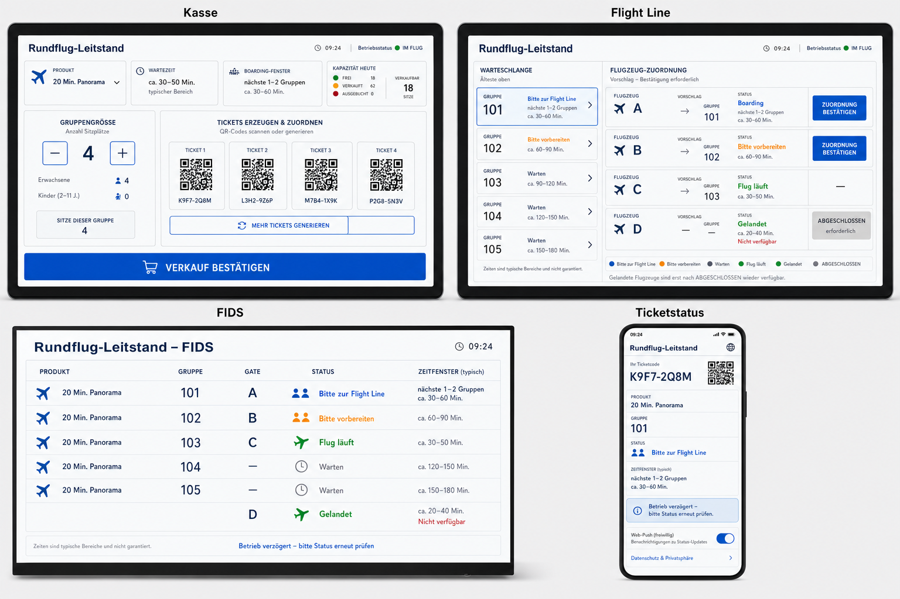
1 · Ideenraum Rollen und Gesamtfluss KONZEPT
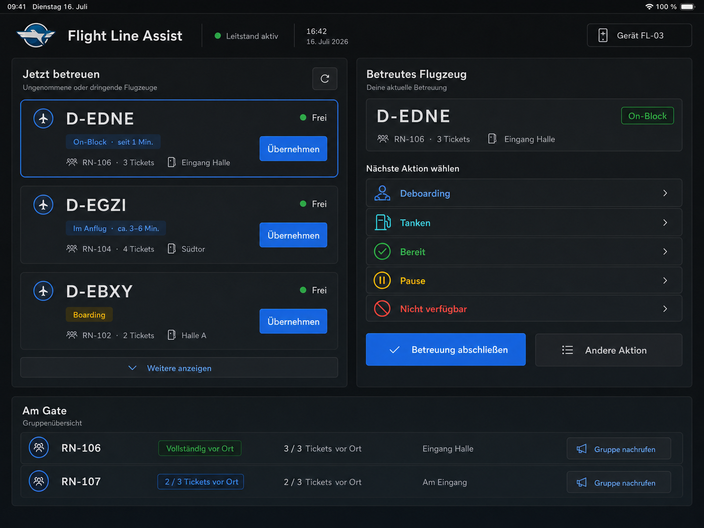
2 · Vereinfachen Kritik und klare Entscheidungen FREIGEGEBENES KONZEPT
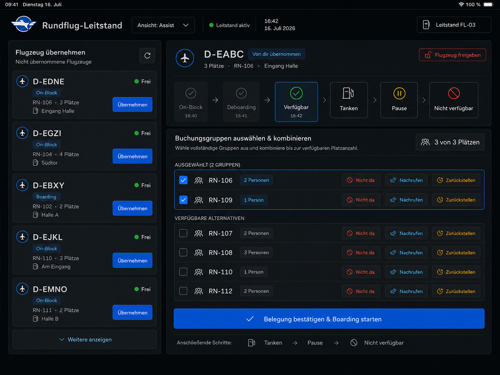
3 · Freigeben Rollen- und Geräteansicht
Konzept → Kritik → Freigabe → Implementierung → Browser-Abgleich
Quelle: historische UX-Renderings aus der Repository-Historie · keine Live-Oberflächen
HOW · KI-HEBEL
Ein fachlicher Wunsch wurde in rund zwei Stunden zum Prognoselabor
22. JULI · 21:04
„Optimal wäre es, wenn der Simulator lokal ausgeführt werden kann …“
Menschlicher Beitrag: Ziel, Randbedingungen und Freigabe
21:04 Wunsch lokal · gleiche Logik
22:11 Plan freigegeben Domänenfunktion + Baseline
23:05 Commit Simulator läuft
Zeit zwischen Anfrage und Commit Die Zeitachse zeigt die verstrichene Zeit – nicht, wie viele Minuten Mensch oder KI jeweils aktiv arbeiteten.
Quelle: Projektchat und Git-Historie vom 22. Juli 2026
HOW · LIVE-DIAGNOSE
Live-Debugging verband reale Bedienung mit Plattformdiagnose
ANDREAS · GERÄT
Aktion auslösen Push aktivieren oder Statuswechsel anstoßen →
→
GEMEINSAME ANALYSE
Blockade eingrenzen Implementierung verbessern und Umgebung prüfen →
ERGEBNIS
Adblocker als Teilursache reale Plattformzustände waren entscheidend
Code war nicht die ganze Erklärung. Einige Implementierungsdetails wurden korrigiert.
Die Umgebung war nicht neutral. Ein Teil der Requests wurde außerhalb der Anwendung blockiert.
Quelle: Projektrückblick von Andreas · Ablauf rekonstruiert, keine zeitgestempelten Logs im Präsentationsarchiv
HOW · REIBUNG
Konkrete Prompts zeigen die Frustmomente
„Alles ist voll mit Fehlern …“
Setup, Auth und iOS
Fehlender Kontext: reale Plattformzustände.
Korrektur: Gerät, Logs und Implementierung gemeinsam prüfen.
„… handwerklich schlecht umgesetzt.“
UI-Finish
Fehlender Maßstab: konkrete Viewports und Abnahmebilder.
Korrektur: Browser-QA, feste Fluchten und stabile Layouts.
74 % „unsichere“ Prognosen
Plausibel – fachlich falsch
Fehlende Semantik: Lernwertalter wurde falsch gedeutet.
Korrektur: Simulation machte den Fehler messbar.
Frust war ein Signal: Kontext, Umgebung oder Qualitätsmaßstab fehlten.
Wörtliche Ausschnitte: Projektchat · dritte Spalte ist eine gekennzeichnete Zusammenfassung, kein wörtliches Zitat
HOW · INTEGRATION
Parallele Änderungen integrieren kontrolliert nach main
origin/main
STREAM A
STREAM B
Worktree Umsetzen Tests + Review A integriert
Worktree Umsetzen Fetch + Rebase erneut testen B integriert
neuer main-Stand
linear
Eigener Worktree → Umsetzung → Tests → A integriert → B rebasiert → erneut getestet → Fast-forward
Quelle: AGENTS.md · kein Direktcommit auf main, kein Force-Push auf main
WHAT · PRODUKT
Ein Betriebssystem für den Rundflugtag
RUNDFLUG-LEITSTAND · V1.12
Ein gemeinsames Lagebild
PWA · Echtzeit · Offline-Überbrückung
01 Verkauf Tickets, Gruppen, QR-Druck und Storno
02 Operative Koordination Queues, Flight Line, Dispatch und flexible Zuordnung
03 Prognose Zeitfenster, Simulator und Tagesauswertung
04 Gästeinformation FIDS, persönlicher QR-Status und freiwilliger Push
05 Nachweis Audit, Rollen, Backup und Wiederanlauf
Das System koordiniert Entscheidungen – es trifft keine flugbetriebliche oder sicherheitsrelevante Freigabe.
WHAT · LIVE-SYSTEM
Kasse, QR-Code und Audit in einem Bildschirm
LIVE-SYSTEM · DARK THEME
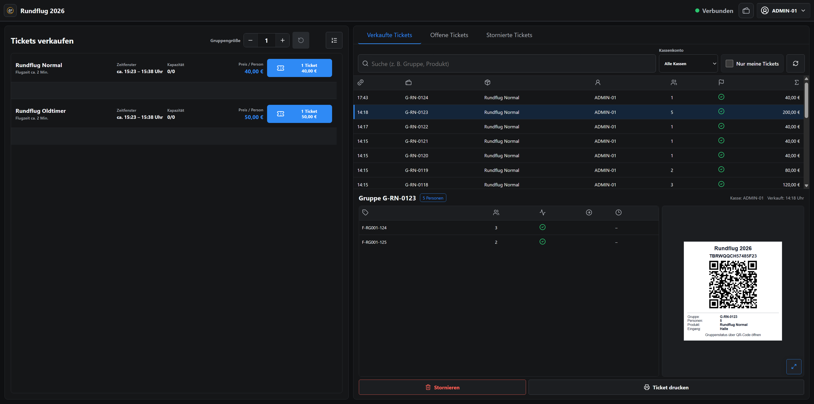
Verkauf Buchungsgruppe & Teilflüge QR-Beleg Storno & Historie
Quelle: aktueller Demonstrationsstand mit synthetischen Ticket- und Veranstaltungsdaten
WHAT · LIVE-SYSTEM
Flight Director und mobile Flight Line arbeiten mit demselben Betriebszustand
LIVE · FLIGHT DIRECTOR
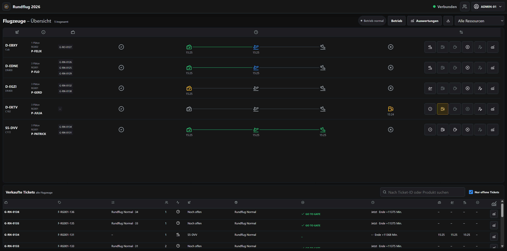
Gesamtlage Zuordnung, Aufruf, Boarding, Flug und Abschluss
Übernehmen verfügbare Flugzeuge Bedienen Ereignisse am Flugzeug
Quelle: aktueller Demonstrationsstand · Desktop- und iPhone-Sichten mit synthetischen Betriebsdaten
WHAT · GÄSTE
Der QR-Code wird zur persönlichen Abfluganzeige
1 Warten 2 Bitte zum Gate 3 Boarding
4 Freiwilliger Push
Anonymer Aufruf über QR · Push wird aktiv eingeschaltet · sichtbare Uhrzeiten bleiben Prognosen
Quelle: aktuelle iPhone-Aufnahmen des Demonstrationssystems · synthetische Gruppennummer
WHAT · ÖFFENTLICHE ANZEIGE
Die Abflugtafel macht den bestätigten Betriebszustand öffentlich
LIVE · FIDS
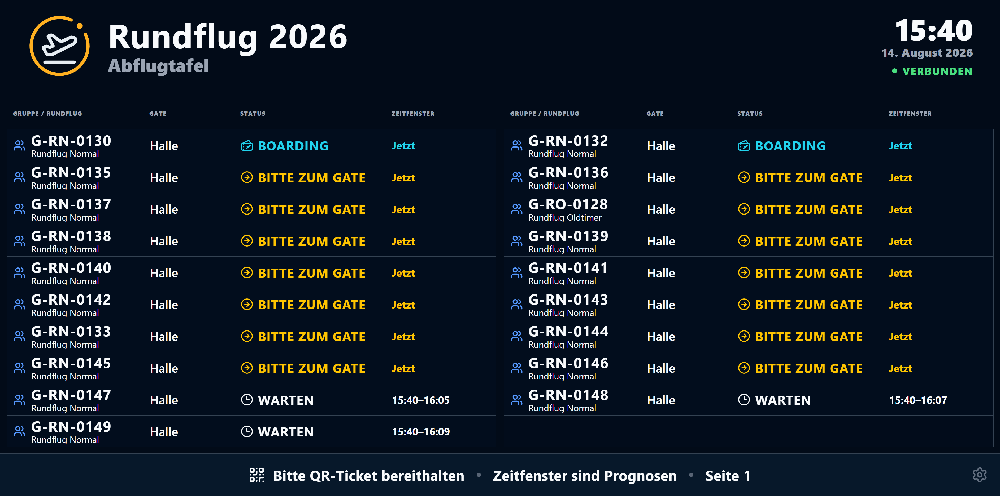
Gruppe & Rundflug Gate bestätigter Status prognostiziertes Zeitfenster
Quelle: aktueller Demonstrationsstand · öffentliche Projektion ohne garantierte Uhrzeiten
WHAT · PROGNOSE
Live-Ereignisse erzeugen Prognosen und Tagesauswertungen
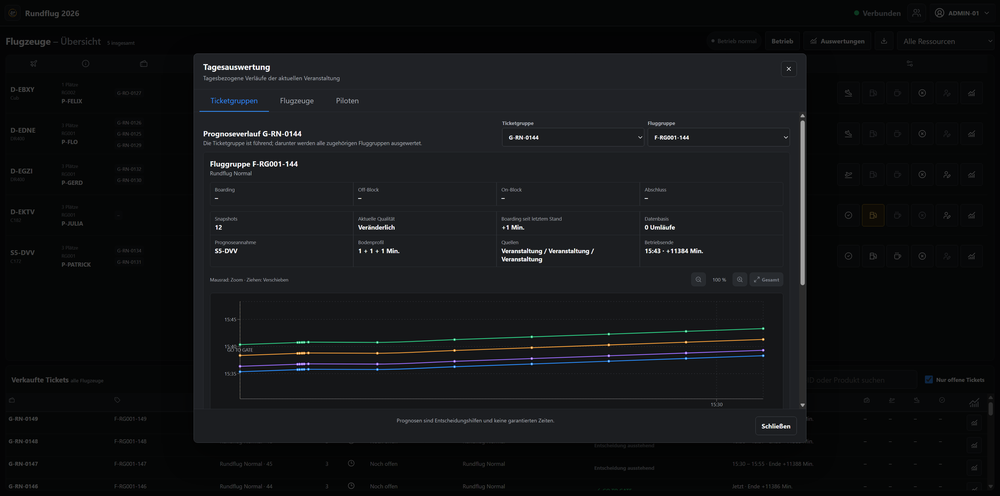
Prognoseverlauf Annahmen, Veränderung und Datenbasis werden sichtbar. 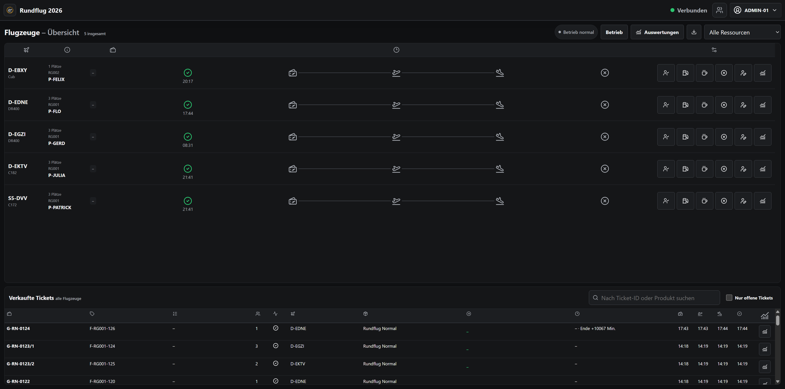
Flottenlage Ist-Ereignisse je Ressource 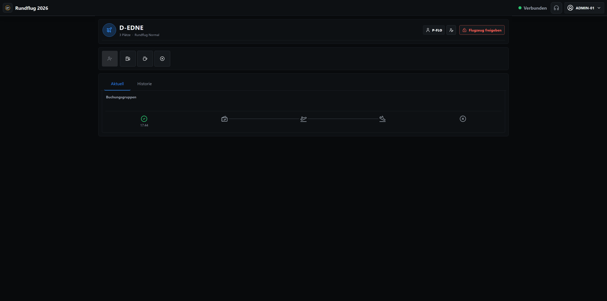
Diagnose Ereignis- und Gruppenhistorie
Planzeit VorgabePrognosezeit EntscheidungshilfeIst-Zeit bestätigtes Ereignis
WHAT · SIMULATION
Der Simulator macht Ablauf, Fehler und Lernwirkung messbar
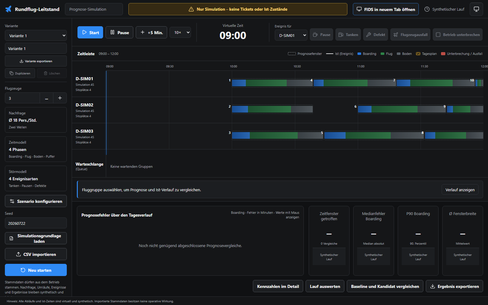
Szenario Nachfrage, Ressourcen, Störungen und reproduzierbarer Seed 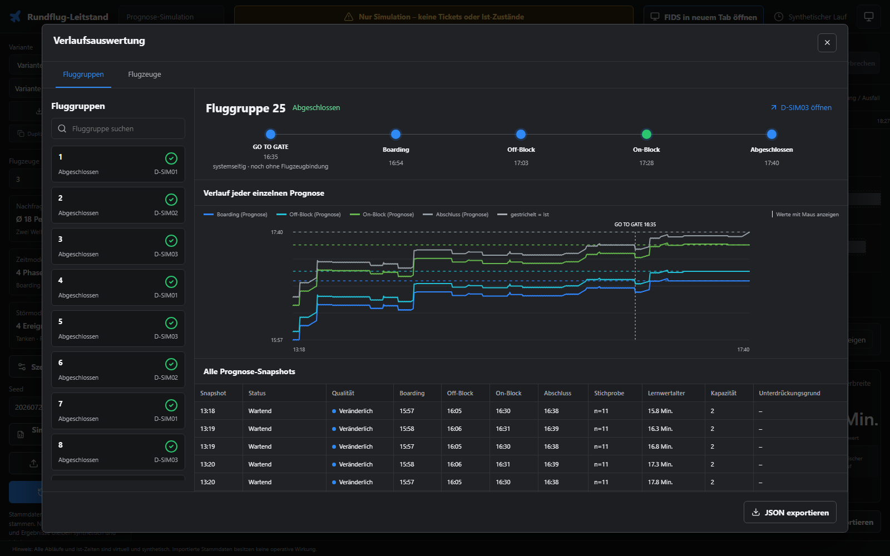
Prognosehistorie 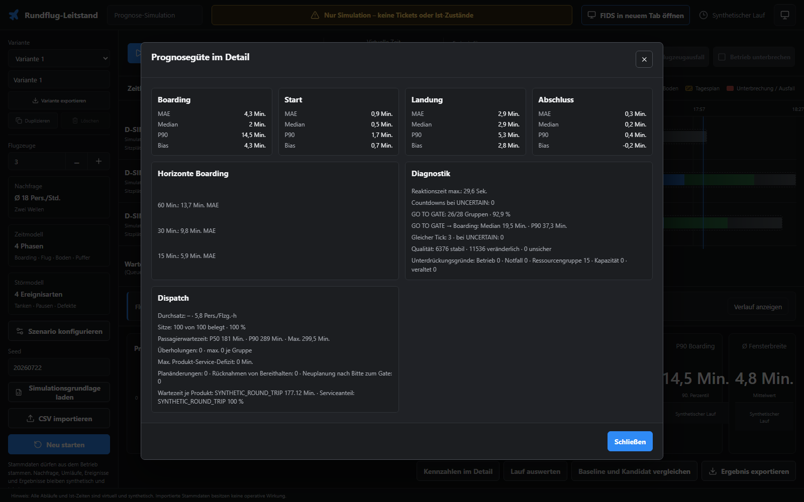
Kennzahlen & Dispatch
WHAT · ARCHITEKTUR
Die Architektur trennt Bedienung, Koordination und dauerhaften Zustand
React/Vite-PWA rollenbezogene Bedienung
Cloudflare Worker API, Auth und Adapter
Durable Object serialisierte Kommandos & WebSockets
D1 + R2 Zustand, Audit, Backups und Analyse
Originaldiagramm „Technischer Kontext“ · beim Build unverändert aus docs/arc42/03-kontextabgrenzung.md geladen
WHAT · ENGINEERING-EVIDENZ
Engineering-Evidenz ist Teil des Produkts
1.878
deklarierte Testfälle
gezählt im Repository
341 Anforderungen fachlicher Vertrag
44 ADRs Entscheidungen & Gründe
12 / 22 arc42-Kapitel / Diagramme Struktur & Laufzeit
349 Testdateien mehrere Testebenen
0 offene Sonar-Issues nach Triage & Refactoring
AGENTS.md überprüfbarer Engineering-Vertrag Invarianten, Architektur, Tests und Integration
Gezählt am 15. August 2026 auf origin/main; Testfälle = Deklarationen von it(...) und test(...)
FAZIT · AUFWAND
Kalenderzeit, menschlicher Aufwand und manuelle Vergleichsschätzung
GEMESSEN
34 Tage Projektzeitraum 11. Juli bis 14. August
GESCHÄTZT
100–160 h aktive menschliche Beteiligung Mitte ≈ 120 Stunden
GESCHÄTZT
2.900–4.500 h hypothetische manuelle Umsetzung ≈ 360–560 Personentage
Keine Gleichsetzung: 34 Tage ersetzten nicht automatisch 4.000 Stunden. Die Größen messen beziehungsweise schätzen Unterschiedliches.
Herleitung und Unsicherheiten: Anhang A18 · Vergleichsschätzung, kein Angebot
WAS DIE FALLSTUDIE ZEIGT
KI beschleunigt Entwicklung.
MACHBAR Ein vollständiges Full-Stack-System in wenigen Wochen
VORAUSSETZUNG Klare Fachführung, kurze Feedbackwege und überprüfbare Regeln
GRENZE Implizite Fachsemantik, reale Plattformzustände, Geräte-Finish und Freigabe
ANHANG
Evidenz und technische Vertiefung
18 Folien zu Quellen, Architektur, Engineering-Prozess, Qualität und Aufwand.
A2–A5 · Quellen & Produkt A6–A11 · Architektur A12–A15 · Engineering & Tests A16–A18 · Sonar & Aufwand
A2 · QUELLENMETHODE
Vier Evidenzarten halten Aussagen auseinander
01 Gemessen Kalenderdifferenz und Zeitstempel aus Git oder Chat.
Beispiel: 11. Juli bis 14. August 02 Gezählt Dateien, Deklarationen und Dokumente im Repository.
Beispiel: 349 Testdateien 03 Rekonstruiert Projektrückblick, wenn Zeitstempel oder Logs fehlen.
Beispiel: Adblocker-Diagnose 04 Geschätzt Bandbreiten mit expliziten Annahmen.
Beispiel: manueller Vergleichsaufwand
A3 · REPOSITORY
Aktuelle Größenordnung am 15. August 2026
764 Commits auf origin/main
163.424 Zeilen TypeScript / TSX
1.878 deklarierte Testfälle
341 Anforderungen
44 ADRs
69 Migrationen
349 Testdateien
22 arc42-Diagramme
Zählung auf origin/main vor dem Präsentationscommit · 794 TypeScript-/TSX-Dateien ohne Build- und Präsentationsartefakte
A4 · PRODUKTFUNKTIONEN
Funktionen folgen den Rollen des Rundflugtags
Rolle Arbeitsoberfläche Zentrale Aufgaben
Kasse Verkaufsbildschirm Tickets, Gruppen, Druck, Storno
Flight Line Assist- und Detailmodus Zuordnung, Boarding, Ereignisse, Turnaround
Betriebsleitung Flotten- und Tageslage Prognose, Dispatch, Störungen, Abschluss
Gäste FIDS und QR-PWA Warten, Aufruf, Boarding, Flug, freiwilliger Push
Administration Stammdaten und Audit Veranstaltung, Ressourcen, Rollen, Backup, Reset
A5 · FACHLOGIK
Zentrale Invarianten begrenzen die Automatisierung
01 Gruppen werden niemals automatisch getrennt.
02 Eine Slotnummer ist Kommunikationskennung – keine garantierte Uhrzeit.
03 Die konkrete Flugzeugzuordnung bleibt bis zur Bestätigung flexibel.
04 Ist-Ereignisse treiben die Prognose; Plan, Prognose und Ist bleiben getrennt.
05 Schreibkommandos sind idempotent und lehnen veraltete Versionen ab.
06 Jede operative Zustandsänderung erzeugt einen append-only Audit-Eintrag.
07 Keine flugbetriebliche, sicherheitsrelevante oder luftrechtliche Entscheidung.
Quelle: AGENTS.md und Anforderungen V1.12.0
A6 · ARC42
arc42 verbindet Systemgrenzen mit Laufzeit und Entscheidungen
12 Kapitel 22 Mermaid-Diagramme
Kontext Akteure, Nachbarsysteme, Abgrenzung
Bausteine Web, Worker, Domain, Verträge, Adapter
Laufzeit Kommandos, Persistenz, Realtime, Fehlerpfade
Verteilung PWA, Worker, D1, Durable Object, R2
Qualität Ziele, Risiken, technische Schulden
Entscheidungen ADRs als verlinkter Begründungsstand
A7 · ARC42 · TECHNISCHER KONTEXT
Originaldiagramm: Technischer Kontext
Unverändert aus docs/arc42/03-kontextabgrenzung.md
A8 · ARC42 · GESAMTSYSTEM
Originaldiagramm: Gesamtsystem
Unverändert aus docs/arc42/05-bausteinsicht.md
A9 · ARC42 · WEB
Originaldiagramm: Web-interne Bausteingrenzen
Unverändert aus docs/arc42/05-bausteinsicht.md
A10 · ARC42 · LAUFZEIT
Originaldiagramm: SELL_TICKET_GROUP
409 stale write wird abgelehnt 200 Antwort nach D1-Commit LIVE Versionssignal an Clients
Unverändert aus docs/arc42/06-laufzeitsicht.md
A11 · ADR-BEISPIEL
ADR-0002 bewahrt das Warum hinter der Koordinationsarchitektur
Kontext Mehrere Clients schreiben parallel. Zustand, Audit, Idempotenz und Realtime müssen konsistent bleiben.
Entscheidung D1 speichert Zustand, Ledger, Idempotenz und Outbox. Genau ein Durable Object je Veranstaltung serialisiert Schreibkommandos.
Regeln Jeder Client sendet commandId und expectedVersion. Kein Zustand existiert nur im Durable Object.
Folgen Realtime erst nach bestätigter Persistenz; Snapshot-Rekonstruktion aus D1 nach Neustart.
Quelle: docs/adr/0002-d1-und-durable-object.md
A12 · AGENTS.MD
AGENTS.md macht aus Prompts einen überprüfbaren Engineering-Vertrag
01 Quellen der Wahrheit Requirements · ADRs · Tests · arc42
Konsistenz 02 Fachliche Invarianten Gruppenschutz · Audit · Idempotenz · stale writes
Sicherheit 03 Architekturgrenzen Domain rein · Verträge zentral · Cloudflare in Adaptern
Änderbarkeit 04 Qualitätsgates Lint · Typen · Tests · Build · Doku · Browser
Nachweis 05 Git & Integration Worktree · Rebase · Fast-forward · Cleanup
Parallelität
A13 · GIT & WORKTREES
Detaillierter Integrationsprozess für parallele KI-Aufträge
WORKTREE A WORKTREE B MAIN
1 Worktree aus aktuellem origin/main2 Änderung und gezielte Tests3 Rebase vor finaler Validierung4 normaler Fast-forward-Push5 Integration nachweisen und aufräumen
Quelle: Repository-AGENTS.md
A14 · TESTINVENTAR
349 Testdateien verteilen sich über Oberfläche, Worker und Fachlogik
1.878 Testfalldeklarationen
349 Testdateien
69 D1-Migrationen
Gezählt am 15. August 2026 · Testdateien nach Repository-Pfad gruppiert, keine Laufzeitbehauptung
A15 · RISIKEN & TESTEBENEN
Jedes Betriebsrisiko bekommt die passende Absicherung
1 Berechnungs- oder Forecastfehler → Unit Test
2 Schnittstelle zweier Komponenten → Integrationstest
3 Gesamtworkflow funktioniert nicht → System / E2E
4 Regression durch Änderung → automatisierte Regression
5 Wartbarkeit oder strukturelle Qualität → SonarQube
A16 · SONARQUBE
Quality Gate, Coverage und strukturelle Analyse ergänzen Verhaltenstests
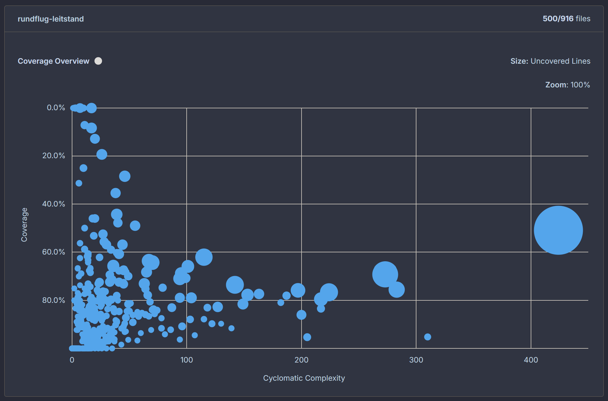
Komplexität & Coverage Risikokombinationen in komplexem, unzureichend getestetem Code 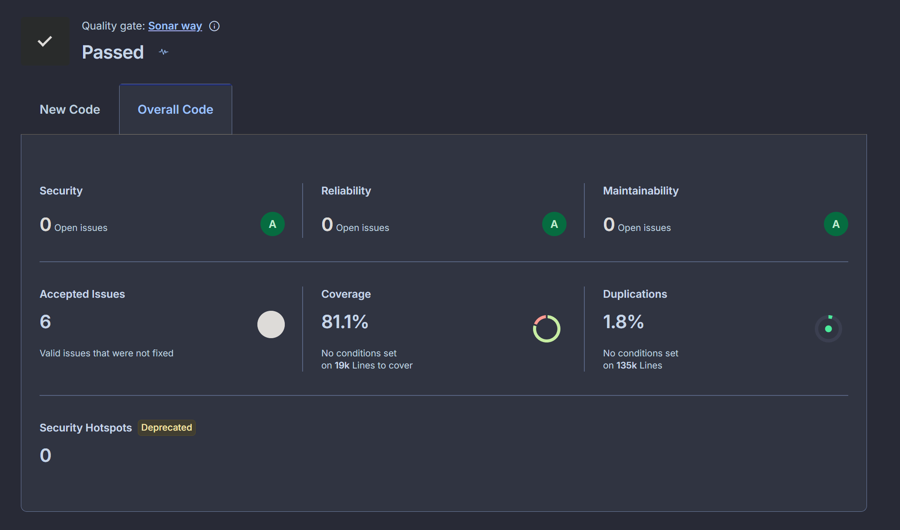
Quality Gate 0 offene Security-, Reliability- und Maintainability-Issues
Quelle: SonarQube-Screenshots aus dem Projektarchiv
A17 · SONARQUBE · TRIAGE
778 Findings wurden triagiert – am Ende stand null offen
12. AUG 778 Findings Inventar nach Regel und Datei
13. AUG 79 Refactor-Commits Ursachen, Umbau und Regressionstests
14. AUG A-Rating · 0 offen Server-Neuscan und Gate bestanden
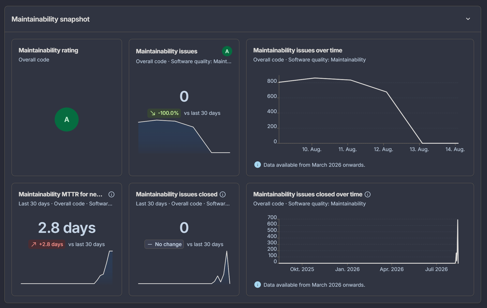
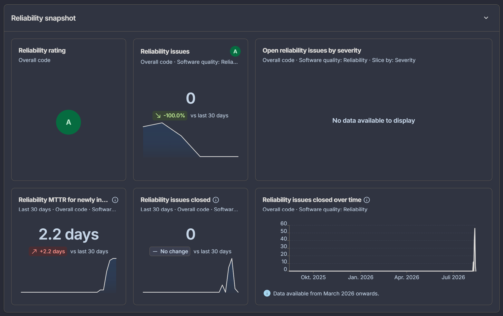
A18 · AUFWANDSMETHODE
Die manuelle Vergleichsschätzung ist eine Bandbreite – kein Ersatzversprechen
Arbeitsblock Untergrenze Obergrenze Annahme
Discovery & Anforderungen 180 h 280 h Konsolidierung, Klärung, Traceability
UX & Produktdesign 240 h 380 h Rollen, Viewports, Iterationen und Abnahme
Architektur & Plattform 420 h 650 h Cloudflare, D1, Durable Object, Realtime, Backup
Produktimplementierung 1.200 h 1.900 h Kasse, Betrieb, Gäste, Prognose und Simulator
Tests & Qualität 650 h 950 h mehrere Ebenen, Browser-QA, Sonar und Refactoring
Doku, Betrieb & Finish 210 h 340 h arc42, ADRs, Guides, Diagnose und Finish
Summe 2.900 h 4.500 h ≈ 360–560 Personentage à 8 Stunden